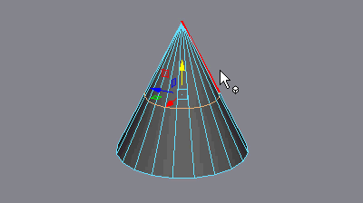
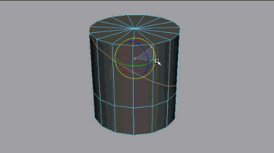
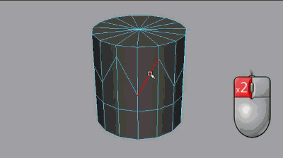

“建模工具包”(Modeling Toolkit)可变换约束，沿其现有边重新定位组件的选择。如果与“移动”(Move)、“旋转”(Rotate)和“缩放”(Scale)工具配合使用，可用于重新排列或拉直循环边和顶点流，而不会破坏曲面的完整性。
在组件模式下，通过按住 Ctrl+Shift 并拖动“移动”(Move)、“旋转”(Rotate)或“缩放工具”(Scale Tool)操纵器（或当它们处于活动状态时，按住 Ctrl+Shift 并使用鼠标中键在屏幕上的任意位置进行拖动），可以激活“边”(Edge)“变换约束”(Transform Constraint)。
或者，可以通过其“工具设置”(Tool Settings)中的“变换约束”(Transform Constraint)选项来激活此功能。
沿边滑动多边形组件
- 选择要在多边形网格上滑动的组件。
可以按住 Shift 键进行选择或者双击顶点以选择整个循环边。请参见选择循环边。
- 双击工具箱中的变换工具。
- 在显示的“工具设置”(Tool Settings)中，从“变换约束”(Transform Constraint)下拉菜单中选择“边”(Edge)。
注： 您还可以沿多边形曲面变换组件。有关详细信息，请参见沿曲面移动多边形组件。
- 执行以下操作之一：
- 使用“移动”(Move)工具操纵器可沿连接的边滑动组件。

- 使用“旋转”(Rotate)工具操纵器可滑动循环组件。

- 使用“缩放”(Scale)工具操纵器可滑动组件循环。

- 使用“移动”(Move)工具操纵器可沿连接的边滑动组件。
- 在“工具设置”(Tool Settings)或“建模工具包”(Modeling Toolkit)窗口中，从“变换约束”(Transform Constraint)下拉菜单中选择“禁用”(Off)以变换没有约束的组件。
提示： 使用鼠标中键单击“建模工具包”(Modeling toolkit)中的变换约束按钮 ，以切换上一选择。
使用“滑动边工具”(Slide Edge Tool)滑动多边形边
专门处理边时，还可以使用“滑动边工具”(Slide Edge Tool)沿其相邻边来移动边。这为您提供了一些额外的“捕捉”(Snapping)和“相对”(Relative)（而不是“绝对”(Absolute)）选项。
使用“滑动边工具”(Slide Edge Tool)滑动多边形边
- 选择要在多边形网格上滑动的边。
可以按住 Shift 键并选择边或者双击以选择整个循环边（请参见选择循环边）。也可以使用“对称”(Symmetry)选择边。
- 选择(Mesh Tools > Slide Edge Tool) >
 。
。
- 按住鼠标中键并拖动以滑动选定的边。
与选定边关联的顶点沿它们的共享垂直边移动。
提示： 按住 Shift 键以沿各个顶点法线移动边/循环边。提示： 如果当前已启用“对称”(Symmetry)，则沿对称线的相应边将以镜像方式移动。